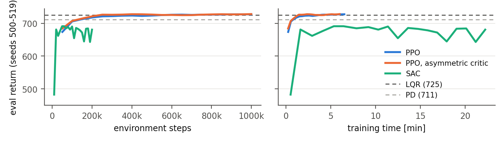

torch.nn, with no RL
framework, and runs on one CPU core. The code is complete and runnable; first reference runs already learn: PPO reaches the
LQR level in about 7 minutes. On the 100 test seeds PPO beats LQR on 77 of them but drops one hard start; under noise, lag and delay, PPO trained in those
conditions beats LQR by 30 points. SAC learns faster per sample but levels off below PD.Stages 1–2 are unchanged apart from additions to networks/losses.py and a --checkpoint option in
demo.py. Stage 3 adds the agents/ package and three scripts.
| File | Content |
|---|---|
agents/common.py | Curriculum, parallel environments (VecEnv), evaluation on fixed seeds, CSV logging. |
agents/ppo.py | PPO loop: rollouts, GAE, minibatch epochs, learning-rate annealing; optional asymmetric critic. |
agents/sac.py | SAC loop: replay buffer, target critic (Polyak), automatic entropy tuning, random warm-up. |
networks/losses.py | + gae (GAE(λ) with bootstrapping at truncation), + sac_alpha_loss, + use_min option of the SAC actor loss. |
train.py | Command line: --algo ppo|sac, --curriculum, --realistic, --asymmetric, --quick; writes runs/<name>/. |
evaluate_agent.py | Agents next to PD and LQR on the test seeds 0–99, with paired differences; --realistic. |
plot_training.py | Learning curves with the PD and LQR levels (Fig. 1). |
tests/test_agents.py | 17 tests: GAE by hand, VecEnv, curriculum, replay buffer, Polyak, α direction, smoke runs, reproducibility. |
train.py builds a configuration (saved as config.json) and calls train_ppo or train_sac. Both loops
draw experience from VecEnv, update the stage 2 networks with the stage 2 losses, append a row to progress.csv,
and every 50k (PPO) / 10k (SAC) steps evaluate the deterministic policy on seeds 500–519, saving best.pt and
last.pt. Curriculum. The proposal's "fixed friction and no disturbances first, then progressively randomise" is
four stages: fixed crr = 0.02, no pulses (10 % of steps) → crr ∈ [0.005, 0.05] (15 %) → + pulses of 0.5–1.25 m s−2
(15 %) → full range, pulses up to 2.0 m s−2 (60 %); --realistic adds noise, lag and delay to the last stage. A stage
changes at each environment's next episode, never inside one. VecEnv steps N environments and batches the network
call. We wrote it instead of using gym.vector because both loops need the true last
observation of an episode (and its info, for the asymmetric critic) separately from the observation after the automatic
reset, and every episode needs its own seed for exact reproducibility. Seeds. Training episodes use seeds ≥ 100,000;
model selection uses 500–519; the final comparison uses 0–99, the seeds of the stage 1 baseline table, seen by nothing else.
PPO (agents/ppo.py) | SAC (agents/sac.py) | |
|---|---|---|
| Data | on-policy: 8 envs × 256 steps = 2,048 per iteration, used once | off-policy: 1 env, every transition kept in a 300k replay buffer; 5,000 random warm-up actions |
| Update | 10 epochs × minibatches of 256; clipped loss (ε = 0.2), value weight 0.5 | 1 update per step, batch 256: twin-Q critic, then actor, then α, then target |
| Value target | GAE, γ = 0.99, λ = 0.95 | r + γ(1−d)[min Q′(s′, a′) − α log π(a′|s′)] from the target critic, τ = 0.005 |
| Exploration | free log σ, no entropy bonus (σ decays 0.61 → 0.10) | α learned so that the entropy tracks −2 (= −action dim.) |
| Stabilisers | advantages normalised per minibatch; grad-norm clip 0.5; lr 3·10−4 → 0 linearly | actor maximises min(Q1, Q2); critic frozen during the actor's backward pass |
Both scale the reward by 0.1 for learning (value targets near 10 instead of 150; logs are unscaled), and both treat the two episode ends differently: a fall (terminated) is terminal, the 500-step limit (truncated) is not, so
δt = rt + γ (1 − termt) V(st+1) − V(st), At = δt + γλ (1 − donet) At+1
with st+1 the true last observation, not the next episode's first one that an auto-resetting environment returns. A balanced episode always ends by truncation, so treating it as terminal would teach the critic that balancing longer is worth nothing; a hand-computed GAE test pins down both cases.

Fig. 1. Evaluation return (deterministic policy, seeds 500–519, full range) of the reference runs, against environment steps and training time; dashed: LQR and PD on the same seeds. One training seed per agent, one CPU core each: PPO 1M steps in 6.6 min, SAC 200k steps in 22 min.
| Condition | Policy (one training seed each) | Return | Survival | Goal % | vs LQR, paired |
|---|---|---|---|---|---|
| Ideal | PD | 712.6 ± 11.7 | 100 % | 93.4 | — |
| LQR | 724.4 ± 8.3 | 100 % | 96.1 | — | |
| PPO | 720.0 ± 71.8 | 99 % | 95.1 | −4.4, better on 77/100 | |
| PPO, asymmetric critic | 720.6 ± 71.8 | 99 % | 95.3 | −3.8, better on 83/100 | |
| SAC | 692.0 ± 21.0 | 100 % | 89.8 | −32.4, better on 1/100 | |
| Noise, lag 0.05 s, 1-step delay | PD | 658.5 ± 68.3 | 99 % | 86.7 | — |
| LQR | 627.4 ± 111.1 | 97 % | 78.8 | — | |
| PPO trained on the ideal task | 386.7 ± 118.3 | 78 % | 13.8 | −240.7, better on 2/100 | |
PPO trained with --realistic | 657.3 ± 69.8 | 99 % | 81.1 | +29.9, better on 77/100 |
Table 1. evaluate_agent.py on the test seeds 0–99 (full randomisation range; max. return 750). Each agent is its
best.pt, chosen on seeds 500–519. "Paired" compares the same seed: same start, crr and pulse schedule.
What we used. PyTorch 1.13.1 remains the only ML dependency: optim.Adam, nn.utils.clip_grad_norm_, autograd,
torch.save. gym 0.26.2 provides only the environment API; numpy runs the replay buffer and the episode bookkeeping;
matplotlib draws Fig. 1. What we wrote. Both training loops, GAE, the replay buffer, the target update, entropy tuning, the
curriculum, the vectorised environment and the evaluation are ours. As in stage 2 we did not use stable-baselines3 or RLlib:
they would hide exactly what this stage is about, current stable-baselines3 requires gymnasium, and its PPO gives actor
and critic the same input, so the asymmetric critic would need a custom policy class anyway. What we borrowed. Hyper-parameters, not code: the PPO values are close to the MuJoCo settings of Schulman et al. (2017) and the stable-baselines3 defaults; the SAC values and the target entropy
−dim(A) follow Haarnoja et al. (2018b). What we had to do to make it work. torch.set_num_threads(1) (fastest for 22k-parameter
networks and bit-reproducible: two runs with one seed give identical weights, which a test checks); every checkpoint stores its
own configuration so that evaluate_agent.py and demo.py can rebuild any run; the code stays Python 3.7-compatible.
Several training seeds per configuration with confidence intervals; the proposal's two remaining baselines (LQR at nominal
friction, and the grid-searched fixed gain); held-out conditions including 3 m s−2 pulses; the asymmetric critic and
--curriculum full as ablations (the asymmetric critic reached each level slightly earlier in our single run, 726 vs 721 at
252k steps, and ended equal: one seed cannot answer stage 2's open question); hard-start episodes to close the tail failure; and a
diagnosis of SAC's plateau.
All 65 tests (14 environment, 7 renderer, 8 realism, 19 network, 17 agent) pass; README.md documents every option.